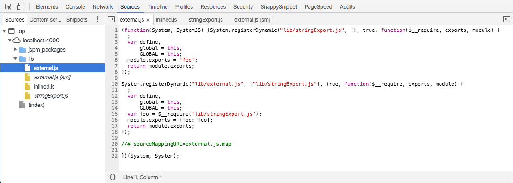
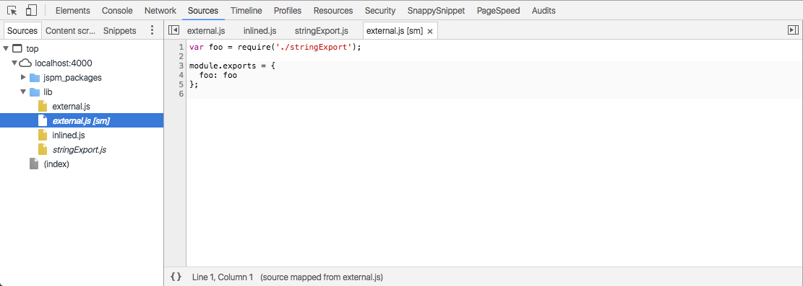
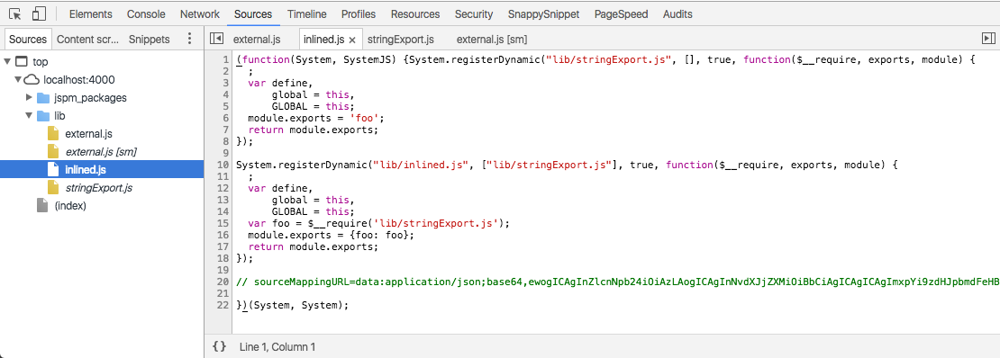

This page loads two primary modules lib/external.js and lib/inlined.js
external.js points at an internal source map lib/external.js.map
inlined.js has it's source map lib/inlined.js.map inlined as a base64 data-url
Both files source maps define a file, either external.js or inlined.js, which has different content that the served file. This is the original file content. A middleware has intercepted the request and done an on the fly bundling.
I expect the source maps to help the browser make the original content available in the developer tools sources tab under the served file name.
In the case of an external source map a new entry appears in the sources tab called "external.js [sm]" alongside exernal.js. The [sm]-file contains the source maps delivered source, while the non-[sm]-file contains the content as delivered on the wire
 In the case of the inlined source map no similar [sw]-file appears in the sources tab. And inlined.js shows the source as delivered on the wire
This page itself recreates the issue, to you can inspect the source tab yourself.
I expected to see the original source of inlined.js from the source maps delivered source to be available in the devloper tools sources tab.
Is this a bug in Chrome?
I'm running Chrome 51.0.2704.106 (64-bit) on OSX
Please contact me on twitter @_munter_ or in this github issue: https://github.com/Munter/express-systemjs-translate/issues/172